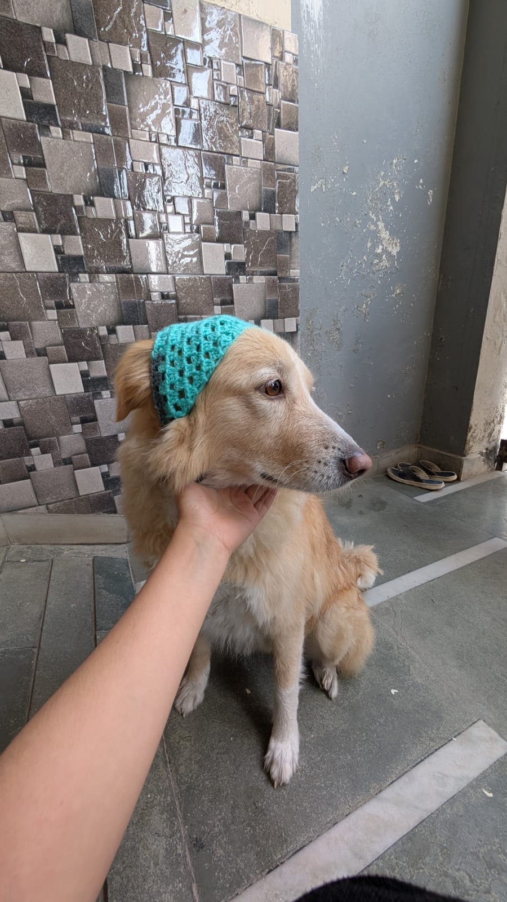

Sattvalya Saar | सत्वल्य सार
शुद्धता, संतुलन, और आंतरिक शांति का मार्ग
आहारं परम् औषधम्
"Food is the ultimate medicine"
स्वस्थस्य स्वास्थ्य रक्षणं
आतुरस्य विकार प्रशमनं च!
समदोषः समाग्निश्च समधातु मलक्रियाः।
प्रसन्नात्मेन्द्रियमनाः स्वस्थ इत्यभिधीयते॥
Sattvalya Saar | सत्वल्य सार
शुद्धता, संतुलन, और आंतरिक शांति का मार्ग
वात
Air + Ether | The Creative Force
पित्त
Fire + Water | The Transformative Force
कफ
Earth + Water | The Stable Force
Vital Point Therapy
Five-Action Detoxification
Purva Karma (Preparation)
Pradhana Karma (Cleansing)
Paschat Karma (Rejuvenation)

B.A.M.S.
Marma Chikitsa Specialist
Panchakarma Expert
3+ Years Practice
Priya Mehta
Rajesh Kumar
Sunita Trivedi
500+ Verified Patient Reviews
Take the first step toward lasting health. Book a personalized consultation and discover how Ayurveda can transform your life—naturally and sustainably.
Medical Disclaimer: Ayurveda is a holistic science focused on balancing the body's natural systems. Results vary by individual. This website is for informational purposes and does not replace professional medical advice. Always consult with qualified healthcare providers for your specific health concerns.